Overview
intraitR supports a complete workflow for the analysis
of morphological traits in freshwater fish, from digitized landmark
coordinates to morphological ratios, morphological space, intraspecific
variability, and measurement error. This vignette walks through the
workflow end to end using a simulated data set, so that it runs without
any real specimen data.
The statistical core of the package (Generalised Procrustes Analysis,
shape principal component analysis, Procrustes ANOVA and morphological
disparity) is delegated to the geomorph package.
intraitR adds fish-specific conveniences on top: file
import, linear ratios, and reporting functions geared towards
ecomorphological questions.
1. Obtaining landmark data
Landmark data can be imported from a tpsDig-formatted
.tps file with [read_tps()], or from a generic long-format
CSV/data.frame with [read_landmarks_csv()]. For this vignette we instead
simulate a data set of three artificial species, each digitized three
times per individual, using [simulate_fish_landmarks()]:
set.seed(1)
fish <- simulate_fish_landmarks(
n_per_species = 15,
species = c("Species_A", "Species_B", "Species_C"),
n_landmarks = 12,
n_replicates = 3
)
fish
#> <intrait_landmarks>
#> 135 specimens, 12 landmarks, 2 dimensions
#> Scale available for 135/135 specimens
#> Metadata columns: specimen, species, population, standard_length_mm, replicate
head(fish$metadata)
#> specimen species population
#> Species_A_ind01_rep1 Species_A_ind01_rep1 Species_A Pop_1
#> Species_A_ind01_rep2 Species_A_ind01_rep2 Species_A Pop_1
#> Species_A_ind01_rep3 Species_A_ind01_rep3 Species_A Pop_1
#> Species_A_ind02_rep1 Species_A_ind02_rep1 Species_A Pop_2
#> Species_A_ind02_rep2 Species_A_ind02_rep2 Species_A Pop_2
#> Species_A_ind02_rep3 Species_A_ind02_rep3 Species_A Pop_2
#> standard_length_mm replicate
#> Species_A_ind01_rep1 74.4 1
#> Species_A_ind01_rep2 74.4 2
#> Species_A_ind01_rep3 74.4 3
#> Species_A_ind02_rep1 95.3 1
#> Species_A_ind02_rep2 95.3 2
#> Species_A_ind02_rep3 95.3 3Every specimen in fish$metadata is tagged with its
species, population, simulated standard length, and digitization
replicate number.
A single configuration can be inspected visually with [plot_landmarks()]:
plot_landmarks(fish, specimen = 1)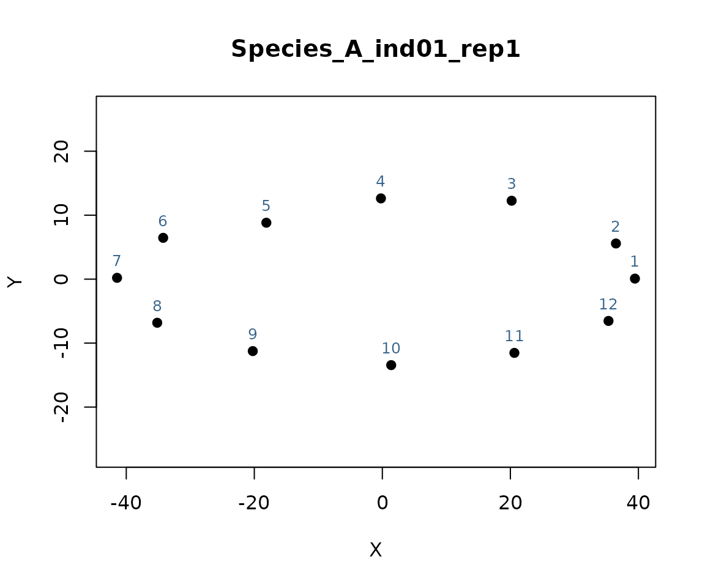
When the original specimen photographs are available,
plot_landmarks() (and [plot_fishmorph_points()], below) can
overlay the landmarks directly on the photograph via
background_image, a useful visual check that no landmark
was placed off the body outline:
plot_landmarks(fish, specimen = 1, background_image = "specimen1.jpg")If landmarks have not yet been digitized, [digitize_landmarks()]
provides an interactive, point-and-click front end (built on
[geomorph::digitize2d()]) that digitizes directly from specimen
photographs and returns a ready-to-use "intrait_landmarks"
object; it requires a live interactive graphics session and so cannot be
run inside this vignette, but the intended usage is:
lm <- digitize_landmarks(
images = c("specimen1.jpg", "specimen2.jpg", "specimen3.jpg"),
scheme = "fishmorph", tpsfile = "specimens.tps"
)2. Generalised Procrustes Analysis
[gpa_fish()] superimposes all configurations, removing differences in position, orientation and scale:
gpa <- gpa_fish(fish)
gpa
#> <intrait_gpa> Procrustes-aligned landmark configurations
#> 135 specimens, 12 landmarks, 2 dimensions
#> Converged in 2 iteration(s)
#> Centroid size: mean = 118.551, range = [81.630, 145.831]
#> No Procrustes-distance outliers flagged (see $outlier_screen)gpa$Csize holds centroid size, the standard size measure
retained alongside Procrustes shape coordinates.
3. Linear distances and morphological ratios
Classical fish morphometric traits are expressed as ratios of linear inter-landmark distances to a reference distance (typically standard length). Distance pairs are defined by landmark index and computed on the raw (pre-Procrustes) coordinates, since Procrustes superimposition removes size:
distances <- list(SL = c(1, 7), BD = c(3, 10), HL = c(1, 4))
morpho_ratios(fish, distances, norm_by = "SL")[1:5, ]
#> specimen species population
#> Species_A_ind01_rep1 Species_A_ind01_rep1 Species_A Pop_1
#> Species_A_ind01_rep2 Species_A_ind01_rep2 Species_A Pop_1
#> Species_A_ind01_rep3 Species_A_ind01_rep3 Species_A Pop_1
#> Species_A_ind02_rep1 Species_A_ind02_rep1 Species_A Pop_2
#> Species_A_ind02_rep2 Species_A_ind02_rep2 Species_A Pop_2
#> standard_length_mm replicate BD_ratio HL_ratio
#> Species_A_ind01_rep1 74.4 1 0.3938 0.5144
#> Species_A_ind01_rep2 74.4 2 0.3935 0.5166
#> Species_A_ind01_rep3 74.4 3 0.3943 0.5132
#> Species_A_ind02_rep1 95.3 1 0.3829 0.5181
#> Species_A_ind02_rep2 95.3 2 0.3926 0.51584. Morphological space
A morphospace is built from a Principal Component Analysis of the
Procrustes shape coordinates. By default, plot() displays
each group as its individual points, a “spider” of dashed segments
linking every point to its group mean, the group mean itself, and a 95%
dispersion ellipse (style = "spider"); pass
style = "hull" for a classical convex-hull display,
style = "density" for a non-parametric kernel-density
contour (useful when a group’s points are visibly skewed or multimodal,
so a bivariate-normal ellipse would be a poor fit), or
style = "none" for plain points. The group legend is drawn
just outside the plot box by default
(legend_position = "outside"), so it never overlaps the
data; pass a standard legend() keyword
(e.g. "topright") to draw it inside the plot box instead,
as in previous versions. Axis limits are computed to fully contain the
ellipse/hull/contour, not just the raw points, so none of these are ever
clipped at the plot box edge. When groups represents
species identity, legend_title, legend_italic,
and abbreviate_species produce a properly typeset “Species”
legend (e.g. "Barbatula barbatula" displayed as italic
B. barbatula):
ms <- morpho_space(gpa, groups = fish$metadata$species)
ms
#> <intrait_morphospace>
#> Axes PC1/PC2, variance explained: 37.1% / 7.7%
#> 135 specimens, 3 groups
plot(ms, legend_title = "Species", legend_italic = TRUE, abbreviate_species = TRUE)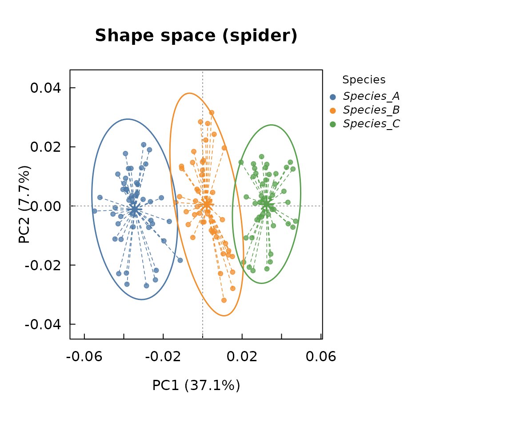
plot(ms, style = "hull", legend_title = "Species", legend_italic = TRUE,
abbreviate_species = TRUE)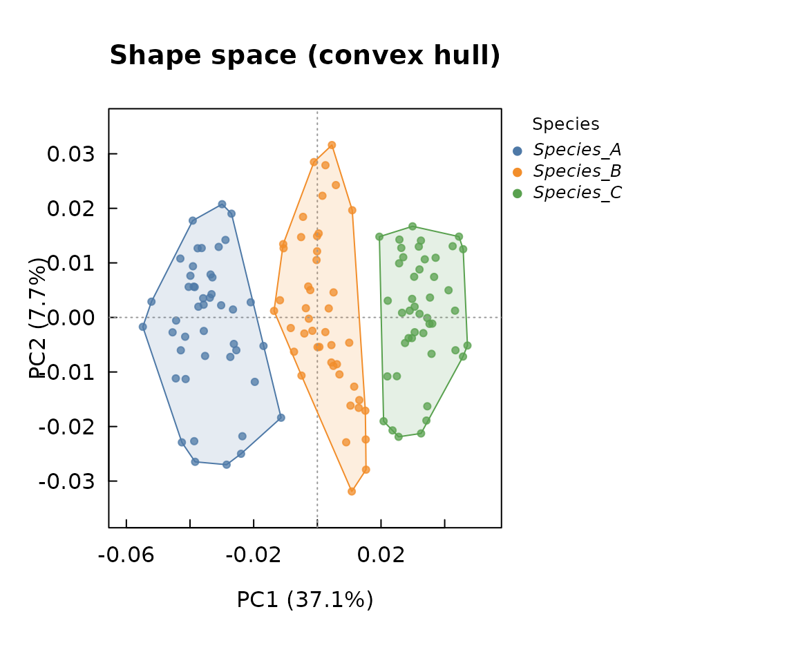
plot(ms, style = "density", legend_title = "Species", legend_italic = TRUE,
abbreviate_species = TRUE)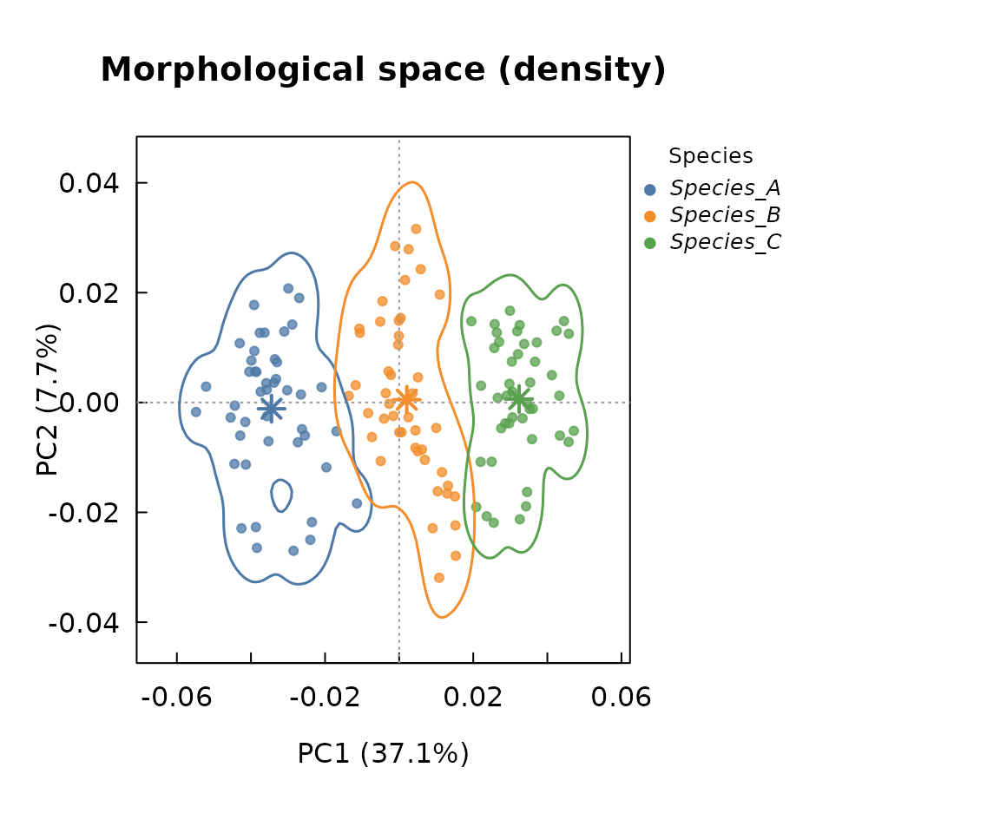
5. Intraspecific morphological variability
[intraspecific_variability()] reports both a shape-based disparity measure (Procrustes variance per group, with a permutation test) and classical coefficients of variation for chosen linear traits:
ratios <- morpho_ratios(fish, distances, norm_by = "SL")
iv <- intraspecific_variability(
gpa = gpa,
groups = fish$metadata$species,
traits = ratios[, c("BD_ratio", "HL_ratio")],
iter = 199
)
iv
#> <intrait_variability>
#> -- Shape (Procrustes variance) disparity --
#>
#> Call:
#> geomorph::morphol.disparity(f1 = coords ~ 1, groups = ~groups,
#> iter = iter, data = gdf, print.progress = FALSE)
#>
#>
#>
#> Randomized Residual Permutation Procedure Used
#> 200 Permutations
#>
#> Procrustes variances for defined groups
#> Species_A Species_B Species_C
#> 0.002775240 0.001398002 0.002362385
#>
#>
#> Pairwise absolute differences between variances
#> Species_A Species_B Species_C
#> Species_A 0.0000000000 0.0013772378 0.0004128544
#> Species_B 0.0013772378 0.0000000000 0.0009643834
#> Species_C 0.0004128544 0.0009643834 0.0000000000
#>
#>
#> P-Values
#> Species_A Species_B Species_C
#> Species_A 1.000 0.005 0.035
#> Species_B 0.005 1.000 0.005
#> Species_C 0.035 0.005 1.000
#>
#>
#> -- Coefficient of variation (%) of linear traits --
#> group trait n mean sd cv_percent
#> Species_A BD_ratio 45 0.3828511 0.02152809 5.623096
#> Species_B BD_ratio 45 0.3580489 0.01574101 4.396330
#> Species_C BD_ratio 45 0.3381333 0.01598622 4.727785
#> Species_A HL_ratio 45 0.5239222 0.01210852 2.311130
#> Species_B HL_ratio 45 0.5190244 0.01362550 2.625213
#> Species_C HL_ratio 45 0.5137244 0.01029254 2.003514[itv_index()] complements this with a formal variance-partitioning approach (Violle et al., 2012; de Bello et al., 2011): the percentage of each trait’s total variance that lies within species (intraspecific trait variability, ITV) versus between species (interspecific):
itv <- itv_index(ratios[, c("BD_ratio", "HL_ratio")], groups = fish$metadata$species)
itv
#> <intrait_itv> (species-level)
#> 2 trait(s), 3 groups
#>
#> -- Per trait --
#> trait ss_total ss_between ss_within pct_interspecific pct_itv
#> BD_ratio 0.0877 0.0452 0.0425 51.5009 48.4991
#> HL_ratio 0.0216 0.0023 0.0193 10.8273 89.1727
#>
#> -- Multivariate summary (standardised traits) --
#> ss_total ss_between ss_within pct_interspecific pct_itv
#> 268 83.5197 184.4803 31.1641 68.8359
plot(itv)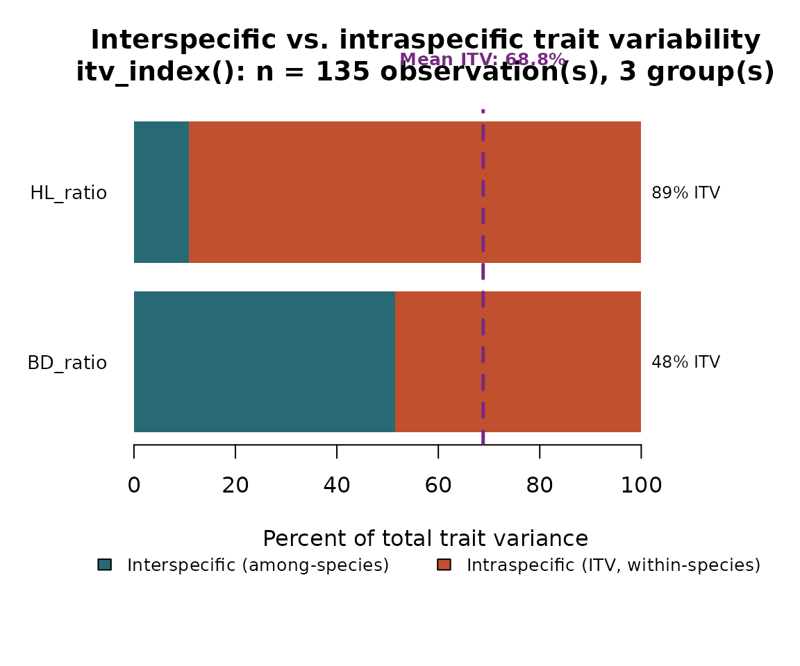
Because fish$metadata also records a
population nested within each species, the ITV component
can be split further into a between-population and a within-population
(residual) part, following the within-/among-population distinction
commonly used in ITV meta-analyses (e.g. Siefert et al., 2015):
itv_nested <- itv_index(
ratios[, c("BD_ratio", "HL_ratio")],
groups = fish$metadata$species,
nested = fish$metadata$population
)
itv_nested
#> <intrait_itv> (nested: species / population)
#> 2 trait(s), 3 groups, 6 nested levels
#>
#> -- Per trait --
#> trait ss_total ss_between ss_population ss_residual ss_within
#> BD_ratio 0.0877 0.0452 0.0065 0.0360 0.0425
#> HL_ratio 0.0216 0.0023 0.0005 0.0188 0.0193
#> pct_interspecific pct_itv pct_itv_between_pop pct_itv_within_pop
#> 51.5009 48.4991 7.4186 41.0806
#> 10.8273 89.1727 2.1858 86.9870
#>
#> -- Multivariate summary (standardised traits) --
#> ss_total ss_between ss_population ss_residual ss_within pct_interspecific
#> 268 83.5197 12.8698 171.6105 184.4803 31.1641
#> pct_itv pct_itv_between_pop pct_itv_within_pop
#> 68.8359 4.8022 64.0338
plot(itv_nested)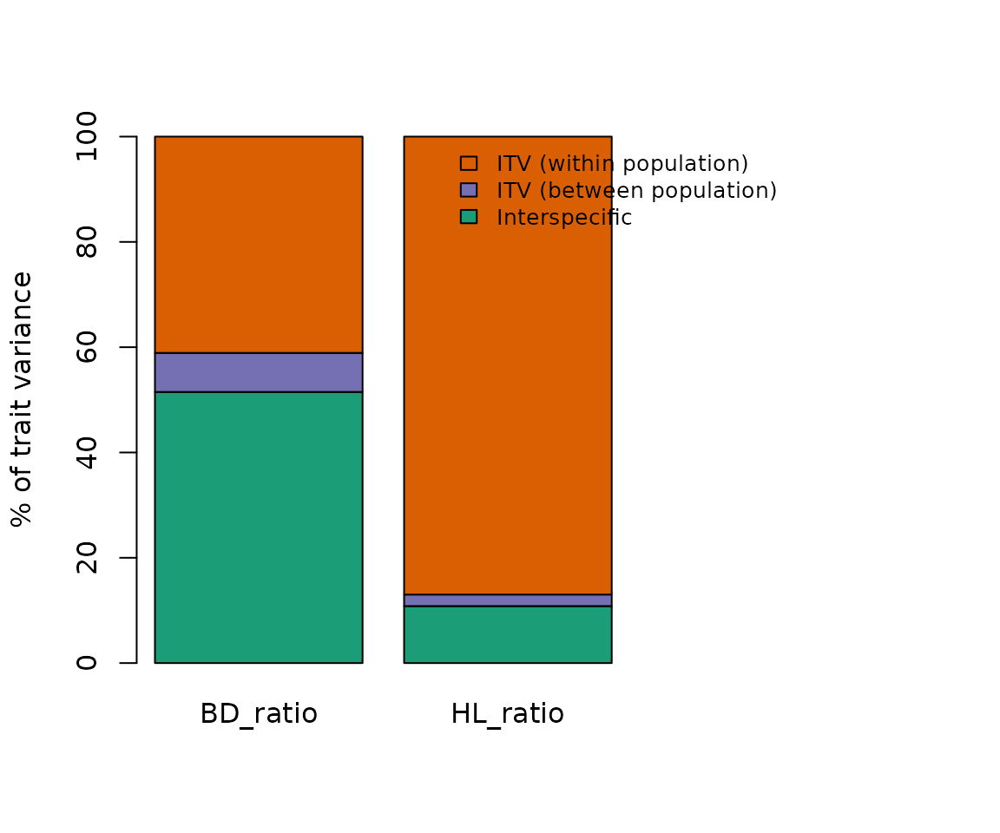
6. Measurement error
Since our simulated data set includes three digitization replicates per individual, [measurement_error()] can quantify how much of the observed variance is attributable to digitization noise rather than genuine biological variation, following a Procrustes ANOVA (Fruciano, 2016):
individual_id <- sub("_rep[0-9]+$", "", fish$metadata$specimen)
me <- measurement_error(gpa, individual = individual_id, method = "procrustes", iter = 199)
me
#> <intrait_measurement_error>
#> Method: Procrustes ANOVA measurement error (Fruciano, 2016)
#>
#> Df SS MS Rsq F Z Pr(>F)
#> individual 44 0.281112 0.0063889 0.95583 44.26 10.003 0.005 **
#> Residuals 90 0.012991 0.0001443 0.04417
#> Total 134 0.294103
#> ---
#> Signif. codes: 0 '***' 0.001 '**' 0.01 '*' 0.05 '.' 0.1 ' ' 1For a single univariate trait (e.g. body depth ratio measured on the same individuals multiple times), the classical ANOVA-based percent measurement error and repeatability (Bailey & Byrnes, 1990) are also available:
me_ratio <- measurement_error(
data.frame(value = ratios$BD_ratio, individual = individual_id),
individual = "individual",
method = "anova"
)
me_ratio
#> <intrait_measurement_error>
#> Method: ANOVA-based measurement error (Bailey & Byrnes, 1990)
#>
#> Df Sum Sq Mean Sq F value Pr(>F)
#> individual 44 0.085200 0.0019364 69.403 < 2.2e-16 ***
#> Residuals 90 0.002511 0.0000279
#> ---
#> Signif. codes: 0 '***' 0.001 '**' 0.01 '*' 0.05 '.' 0.1 ' ' 1
#>
#> Percent measurement error (%ME): 1.42%
#> Repeatability (R): 0.9587. Allometry correction (optional)
If species differ substantially in size, [correct_allometry()] removes the shape variation linearly associated with log centroid size before further analysis:
corrected <- correct_allometry(gpa, method = "group", groups = fish$metadata$species)
dim(corrected)
#> [1] 12 2 1358. The FISHMORPH protocol (Brosse et al., 2021)
intraitR also implements the specific digitization and
trait protocol used to build the FISHMORPH database (Brosse et al.,
2021), based on a fixed scheme of 21 landmarks per specimen (snout,
caudal fin basis, body depth, head depth, eye position and diameter,
mouth, pectoral fin, caudal peduncle depth, caudal fin depth) plus an
embedded scale bar, and optionally a 22nd point to correct standard
length for body curvature in the picture.
We simulate a small data set following this exact scheme with [simulate_fishmorph_points()], and inspect the digitization of one specimen with [plot_fishmorph_points()]:
fishmorph_fish <- simulate_fishmorph_points(n_per_species = 15, n_replicates = 1)
plot_fishmorph_points(fishmorph_fish, specimen = 1)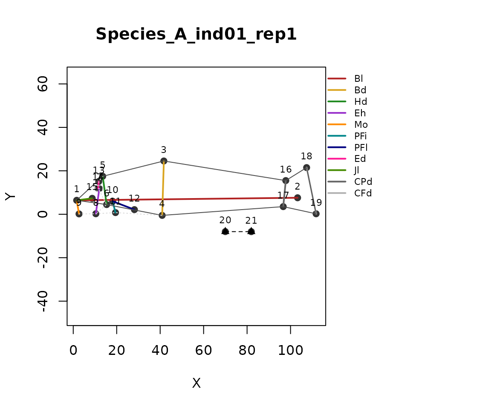
[fishmorph_segments()] computes the 11 linear measurements of the protocol directly from the digitized points, automatically converting pixel units to centimetres using the embedded scale bar (landmarks 20-21):
segments <- fishmorph_segments(fishmorph_fish)
head(segments)
#> specimen individual species population
#> Species_A_ind01_rep1 Species_A_ind01_rep1 Species_A_ind01 Species_A Pop_1
#> Species_A_ind02_rep1 Species_A_ind02_rep1 Species_A_ind02 Species_A Pop_2
#> Species_A_ind03_rep1 Species_A_ind03_rep1 Species_A_ind03 Species_A Pop_1
#> Species_A_ind04_rep1 Species_A_ind04_rep1 Species_A_ind04 Species_A Pop_2
#> Species_A_ind05_rep1 Species_A_ind05_rep1 Species_A_ind05 Species_A Pop_1
#> Species_A_ind06_rep1 Species_A_ind06_rep1 Species_A_ind06 Species_A Pop_2
#> replicate Bl Bd Hd Eh Mo
#> Species_A_ind01_rep1 1 8.505350 2.096153 1.099342 0.9813917 0.5309971
#> Species_A_ind02_rep1 1 8.506875 2.038591 1.155773 1.1397534 0.6165428
#> Species_A_ind03_rep1 1 8.319205 2.120556 1.050294 1.0492159 0.5064802
#> Species_A_ind04_rep1 1 8.506154 2.075662 1.056533 1.1718556 0.5348889
#> Species_A_ind05_rep1 1 8.554518 1.966602 1.094286 0.9623947 0.5805282
#> Species_A_ind06_rep1 1 8.550856 2.052173 1.192548 0.9765573 0.5046539
#> PFi PFl Ed Jl CPd CFd
#> Species_A_ind01_rep1 0.4506103 0.8983300 0.2685877 0.6028402 1.0077335 1.815952
#> Species_A_ind02_rep1 0.4396170 0.8322191 0.3487057 0.6891087 1.0049738 1.830840
#> Species_A_ind03_rep1 0.6083178 0.8785836 0.2197641 0.5406393 0.8104273 1.897427
#> Species_A_ind04_rep1 0.4856911 0.7611511 0.3046655 0.7375663 1.0091663 1.792895
#> Species_A_ind05_rep1 0.5435835 0.8017112 0.2160107 0.6351791 0.9251790 1.776199
#> Species_A_ind06_rep1 0.6873056 0.9063088 0.2659785 0.6358050 1.0062022 1.806302[fishmorph_ratios()] then derives the 9 unitless FISHMORPH ratios
from these measurements. The no_caudal_fin,
ventral_mouth, and no_pectoral_fin arguments
implement the special-case rules of Villéger et al. (2010) for species
with unusual morphologies (e.g. no visible caudal fin, a ventrally
positioned mouth, or no pectoral fins):
fishmorph_traits <- fishmorph_ratios(segments)
head(fishmorph_traits)
#> specimen individual species population
#> Species_A_ind01_rep1 Species_A_ind01_rep1 Species_A_ind01 Species_A Pop_1
#> Species_A_ind02_rep1 Species_A_ind02_rep1 Species_A_ind02 Species_A Pop_2
#> Species_A_ind03_rep1 Species_A_ind03_rep1 Species_A_ind03 Species_A Pop_1
#> Species_A_ind04_rep1 Species_A_ind04_rep1 Species_A_ind04 Species_A Pop_2
#> Species_A_ind05_rep1 Species_A_ind05_rep1 Species_A_ind05 Species_A Pop_1
#> Species_A_ind06_rep1 Species_A_ind06_rep1 Species_A_ind06 Species_A Pop_2
#> replicate BEl VEp REs OGp RMl BLs PFv
#> Species_A_ind01_rep1 1 4.0576 0.4682 0.2443 0.2533 0.5484 0.5245 0.2150
#> Species_A_ind02_rep1 1 4.1729 0.5591 0.3017 0.3024 0.5962 0.5669 0.2156
#> Species_A_ind03_rep1 1 3.9231 0.4948 0.2092 0.2388 0.5148 0.4953 0.2869
#> Species_A_ind04_rep1 1 4.0980 0.5646 0.2884 0.2577 0.6981 0.5090 0.2340
#> Species_A_ind05_rep1 1 4.3499 0.4894 0.1974 0.2952 0.5805 0.5564 0.2764
#> Species_A_ind06_rep1 1 4.1667 0.4759 0.2230 0.2459 0.5331 0.5811 0.3349
#> PFs CPt
#> Species_A_ind01_rep1 0.1056 1.8020
#> Species_A_ind02_rep1 0.0978 1.8218
#> Species_A_ind03_rep1 0.1056 2.3413
#> Species_A_ind04_rep1 0.0895 1.7766
#> Species_A_ind05_rep1 0.0937 1.9198
#> Species_A_ind06_rep1 0.1060 1.7952Finally, [trait_space()] builds a functional trait space from any
numeric trait table — here the 9 FISHMORPH ratios — by Principal
Component Analysis (or Principal Coordinate Analysis,
method = "pcoa"). By default, traits are
log10(x + 1)-transformed (the + 1
accommodating ratios that can legitimately equal 0 under the Villéger et
al., 2010, exception rules) and then centred and scaled to unit variance
before the ordination (log_transform = TRUE,
scale = TRUE); set either to FALSE to skip
that step. As with morpho_space(), plot()
defaults to a spider/ellipse display per group:
fts <- trait_space(fishmorph_traits, groups = fishmorph_fish$metadata$species)
#> Warning: Dropping non-numeric column(s) from the ordination: specimen,
#> individual, species, population
#> Warning: Dropping constant (zero-variance) column(s) from the ordination:
#> replicate
fts
#> <intrait_traitspace> (pca)
#> Axes PC1/PC2, variance explained: 31.1% / 19.3%
#> 45 observations, 9 traits (BEl, VEp, REs, OGp, RMl, BLs, PFv, PFs, CPt)
#> 3 groups
#> No within-group outliers flagged (see $outlier_screen)
plot(fts)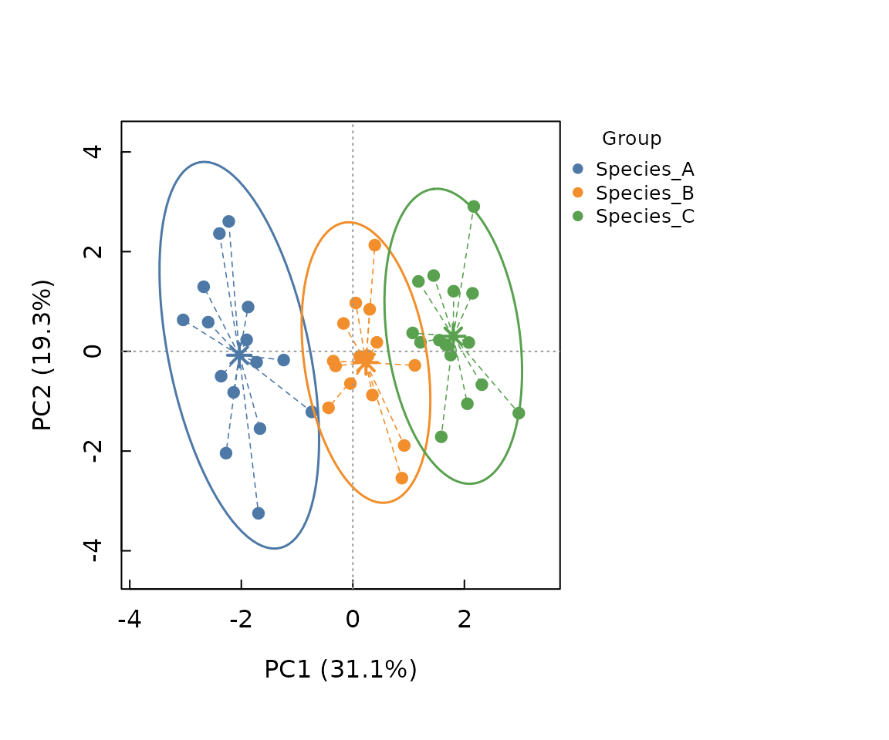
Missing trait values, common in real ecomorphological data sets, are
handled via the na_action argument: "fail"
(default) errors, "omit" drops incomplete rows,
"impute_mean"/"impute_group_mean" fill missing
values with column or within-group means, and "missforest"
uses nonparametric random-forest imputation
(missForest::missForest(), Stekhoven & Bühlmann, 2012),
exploiting correlations among traits (and groups, as an
auxiliary predictor) rather than filling every missing value in a trait
with the same mean:
fts_imputed <- trait_space(
fishmorph_traits_with_gaps, groups = fishmorph_fish$metadata$species,
na_action = "missforest"
)Each option reports via message() how many rows or
values were affected (and, for "missforest", the out-of-bag
imputation error).
[trait_disparity()] complements trait_space() with a
permutation test of whether groups differ in multivariate trait
dispersion (the trace of each group’s trait covariance matrix), computed
on the full standardised trait matrix rather than on the two axes shown
in the plot above:
td <- trait_disparity(fts, iter = 199)
td
#> <intrait_disparity> (199 permutations)
#> -- Trait variance (dispersion) by group --
#> Species_A Species_B Species_C
#> 8.7706 5.6112 5.3026
#>
#> -- Pairwise absolute differences (lower triangle) / p-values (upper triangle) --
#> Species_A Species_B Species_C
#> Species_A NA 0.1000 0.07
#> Species_B 3.1594 NA 0.89
#> Species_C 3.4680 0.3086 NA[bootstrap_functional_space()] asks a related but different question:
does representing species by real individuals, rather than by their
centroid, inflate the estimated functional space (an n-dimensional
convex-hull volume in PCA space)? For each of n_boot
bootstrap “communities” it draws one individual at random per species
and computes the resulting convex-hull volume, and compares this
distribution to a single centroid-based reference volume, following
Bertrand (2026); requires the geometry package (Suggested,
not installed by default):
bf <- bootstrap_functional_space(fts, n_axes = 2, n_boot = 100)
bf
#> <intrait_bootstrap_fspace> (method = "convexhull")
#> 2 PCA axes retained (50.4% of variance), 3 species
#> Centroid-based reference richness (FD_ref): 0.713
#> Bootstrap richness (FD_boot, 100 draws): mean = 1.951, SD = 1.534, 5-95% = [0.1196, 4.938]
#> Difference (mean FD_boot - FD_ref): 1.238 (one-sided bootstrap p = 0.2079)
plot(bf)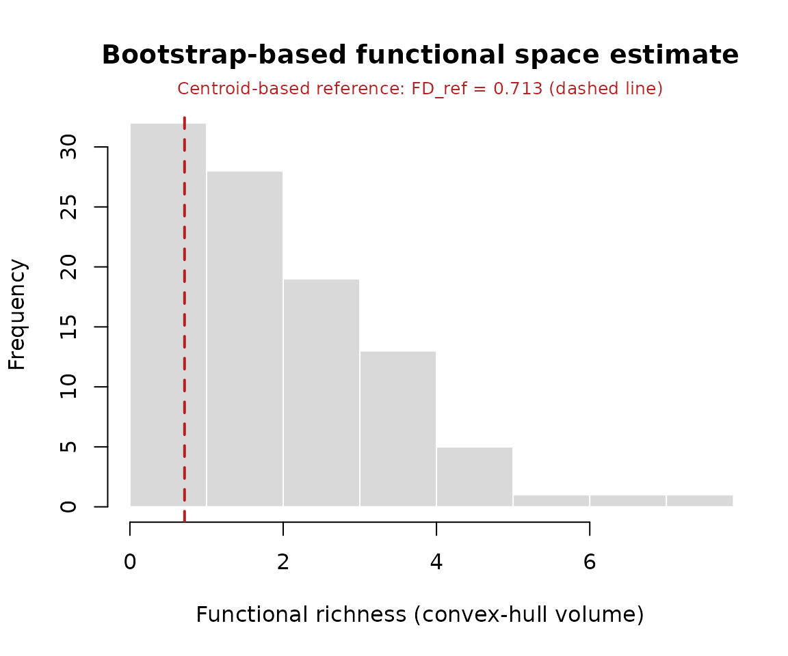
[species_sensitivity()] then asks which species drive that difference: each species’ centroid is replaced, one individual at a time, by that individual’s own position (every other species fixed at its centroid), and the resulting percent change in functional richness is summarised per species as a mean effect and a min-max range (Bertrand, 2026):
ss <- species_sensitivity(fts, n_axes = 2)
ss
#> <intrait_species_sensitivity> (method = "convexhull")
#> 2 PCA axes retained (50.4% of variance), 3 species, FD_ref = 0.713
#> Top 3 species by |mean %change in functional richness|:
#> species n mean_dFD range_dFD
#> Species_B 15 +142.19% [-96.21%, +641.01%]
#> Species_C 15 +69.26% [-60.63%, +418.62%]
#> Species_A 15 +68.76% [-77.99%, +301.56%]
plot(ss)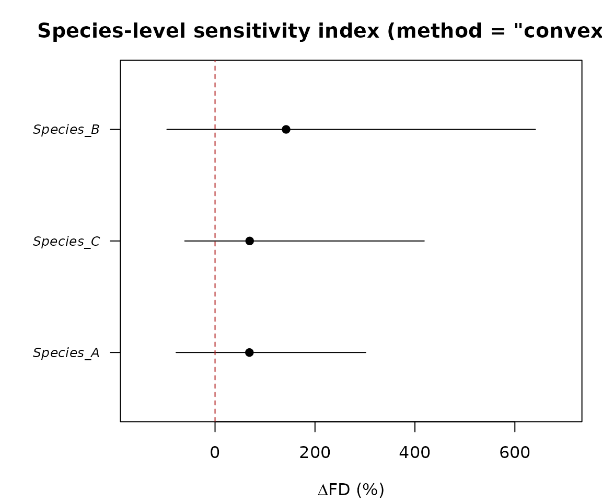
Both functions accept a method argument beyond the
default "convexhull": "dendrogram" (UPGMA
functional dendrogram branch length, Petchey & Gaston 2002, no extra
package required), "tpd" (Trait Probability Density,
Carmona et al. 2019), or "hypervolume" (Gaussian-kernel
hypervolume, Blonder et al. 2014, 2018). Since these four measures are
not on the same scale, [compare_functional_richness()] runs several of
them on the same data and tabulates the percent change and bootstrap
p-value side by side, so agreement (or disagreement) across methods can
itself be assessed:
cmp <- compare_functional_richness(fts, methods = c("dendrogram", "convexhull"), n_axes = 2, n_boot = 100)
cmp
#> <intrait_richness_comparison>
#> 2 method(s) requested, 2 succeeded
#> method status fd_ref fd_boot_mean pct_diff p_value significant
#> dendrogram ok 7.784 9.352 +20.1% 0.1881 FALSE
#> convexhull ok 0.713 2.43 +240.9% 0.198 FALSE
#>
#> 0/2 method(s) agree that individual-based richness significantly
#> exceeds the centroid-based reference (p < 0.05).
plot(cmp)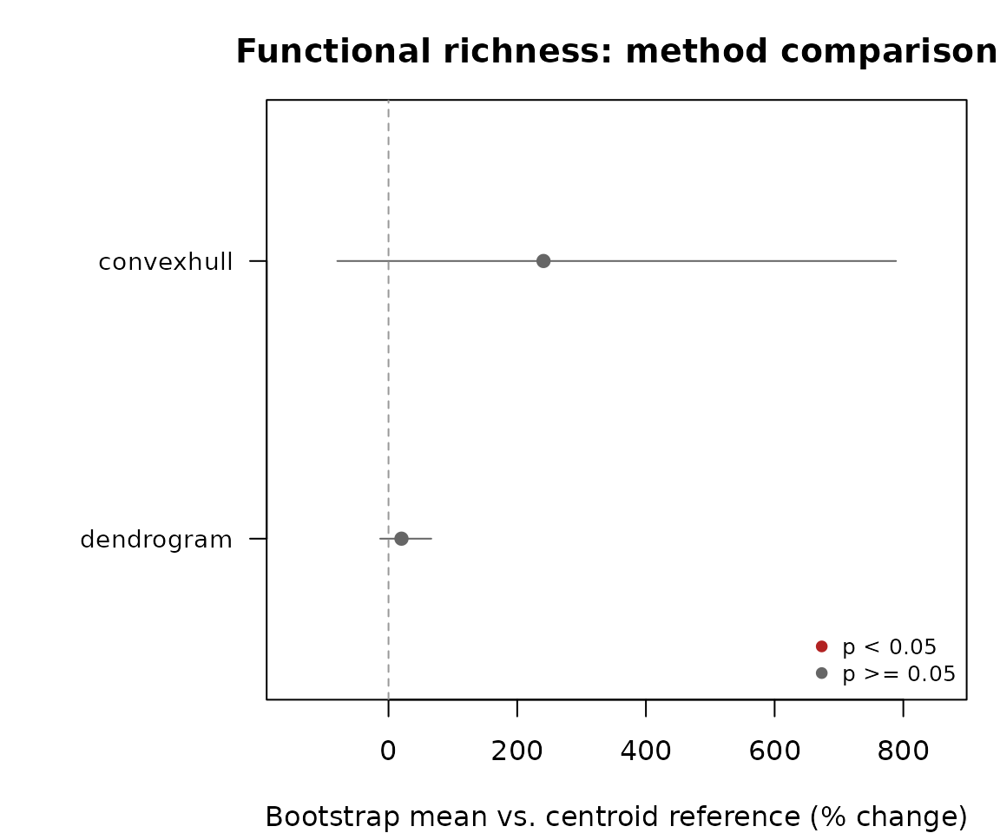
Because fishmorph_segments() and
fishmorph_ratios() return plain data frames, they compose
directly with [summary_traits()] and [intraspecific_variability()]
(traits-only mode) exactly as the ratios from [morpho_ratios()] do
earlier in this vignette.
References
Adams DC, Collyer ML, Kaliontzopoulou A (2024). geomorph: Software for geometric morphometric analyses. R package.
Bailey RC, Byrnes J (1990). A new, old method for assessing measurement error in both univariate and multivariate morphometric studies. Systematic Zoology, 39(2), 124-130.
Brosse S, Charpin N, Su G, Toussaint A, Herrera-R GA, Tedesco PA, Villéger S (2021). FISHMORPH: A global database on morphological traits of freshwater fishes. Global Ecology and Biogeography, 30(11), 2330-2336.
de Bello F, Lavorel S, Albert CH, Thuiller W, Grigulis K, Dolezal J, Janecek S, Leps J (2011). Quantifying the relative importance of intraspecific trait variability and interspecific trait turnover for functional diversity. Methods in Ecology and Evolution, 2(2), 163-174.
Fruciano C (2016). Measurement error in geometric morphometrics. Development Genes and Evolution, 226, 139-158.
Siefert A, Violle C, Chalmandrier L, et al. (2015). A global meta-analysis of the relative extent of intraspecific trait variation in plant communities. Ecology Letters, 18(12), 1406-1419.
Stekhoven DJ, Bühlmann P (2012). MissForest – non-parametric missing value imputation for mixed-type data. Bioinformatics, 28(1), 112-118.
Villéger S, Ramos Miranda J, Flores Hernandez D, Mouillot D (2010). Contrasting changes in taxonomic vs. functional diversity of tropical fish communities after habitat degradation. Ecological Applications, 20(6), 1512-1522.
Violle C, Enquist BJ, McGill BJ, Jiang L, Albert CH, Hulshof C, Jung V, Messier J (2012). The return of the variance: intraspecific variability in community ecology. Trends in Ecology & Evolution, 27(4), 244-252.
Winemiller KO (1991). Ecomorphological diversification in lowland freshwater fish assemblages from five biotic regions. Ecological Monographs, 61(4), 343-365.
Zelditch ML, Swiderski DL, Sheets HD (2012). Geometric Morphometrics for Biologists: A Primer (2nd ed). Academic Press.